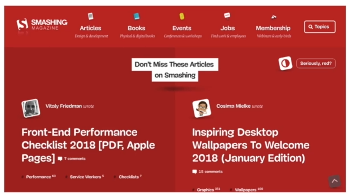
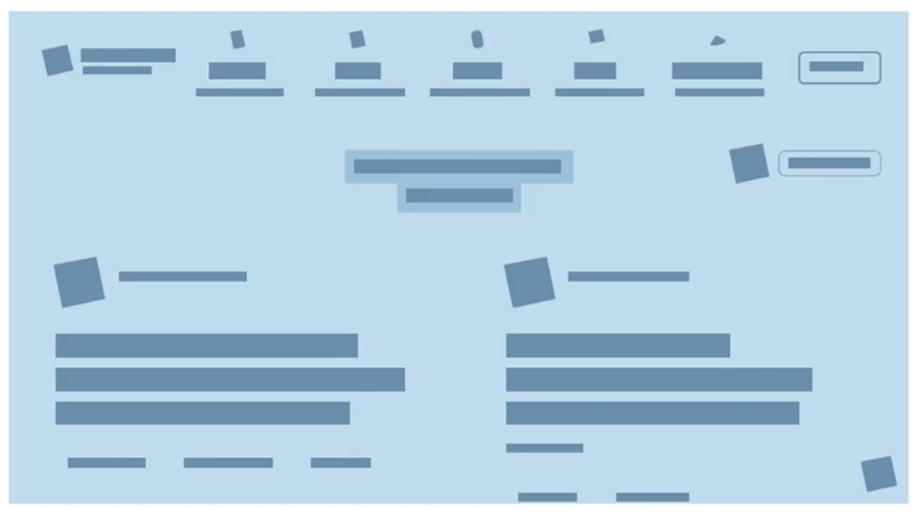
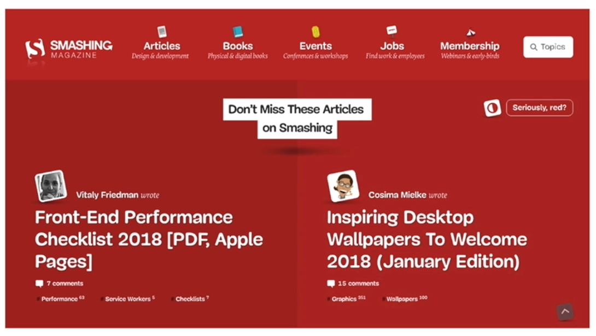
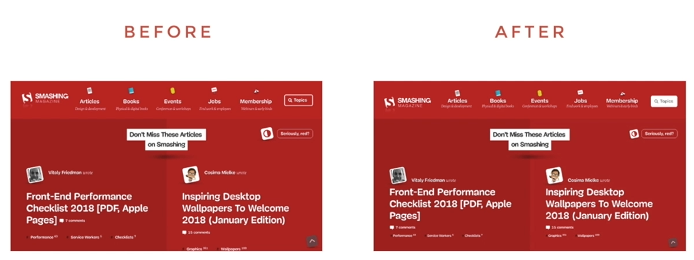
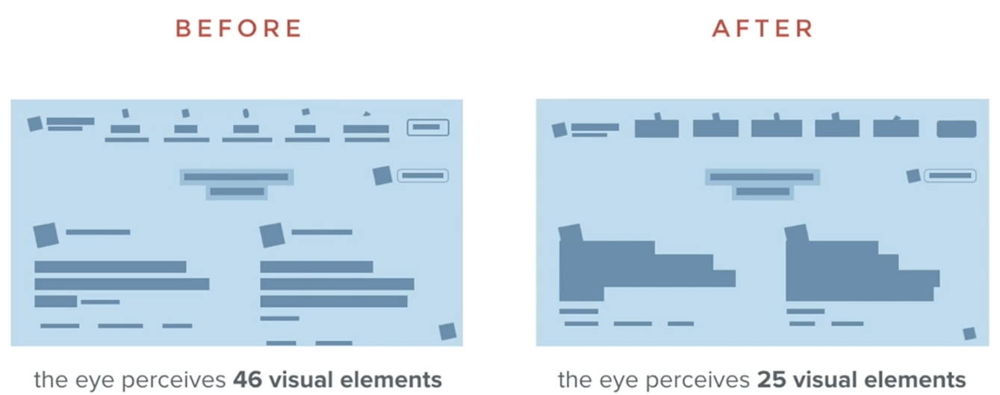

Jump to a section
09 · Balance Creates Visual Order
Refined 15 October 2026 from the supplied Joe Natoli course notes. Original wording and captures remain preserved.
Core principle
Balance distributes visual weight. Negative space and alignment can make relationships clear without symmetrical composition.
Application to game tools
Separate task inputs, review information and actions while retaining a clear reading route.
Assessment and qualification
A balanced appearance alone does not prove efficient operation.
Try it
Which group looks important, and is that the intended group?
Source: 09 Balance Creates Visual Order.md
Study detail and teaching translation
Visual weight comes from more than physical size: density, contrast, isolation and surrounding space affect the composition.
Balance can be symmetrical or asymmetrical. The objective is a readable relationship between regions, not equal quantities on both sides.
Teaching adaptation: compare the weight of inputs, review information and actions. A large empty table may be acceptable as a stable work area, but it should not obscure the next available action.
Original captures




